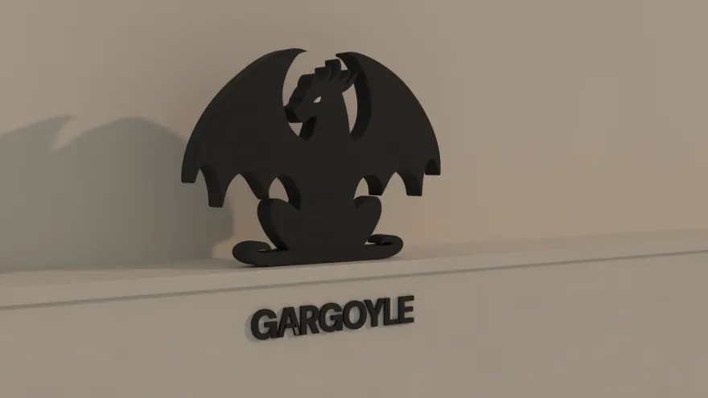

An independent design & engineering studio that specializes in creating identity systems and products that elevate your business and resonate with your audience.
Unifize
A brand, design system and website built around the time regulated teams lose to coordination.
- Brand
- Website
- Film
Theatre AI
A website and product prototype for managing performers’ rights and consent.
- Website
- Product
Our team brings design and engineering together to create thoughtful identities and digital products for people and businesses across industries.
Studio Display Tidal Pool
A Studio Display set among rocks and rippling water at dawn.
- 3D
- Motion
Canongate AI
A pitch film showing how Canongate AI tracks political risk by country and updates its scores daily.
- Pitch film
- Motion
TrackFlow
A brand, website and app for personalising a site’s content to each visitor.
- Brand
- Website
- Product

Gargoyle
A brand and website for a North Bengal studio that builds Apple HomeKit smart homes.
- Brand
- Website
Studio Display
A 3D film of a Studio Display in a sunlit editing studio.
- 3D
- Motion